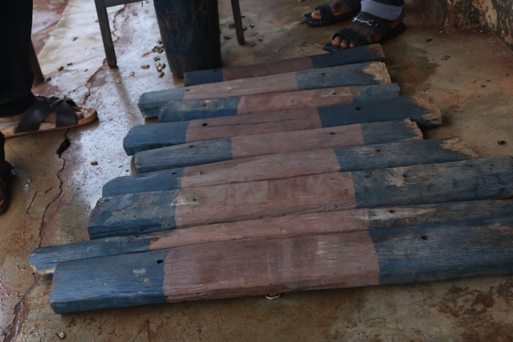
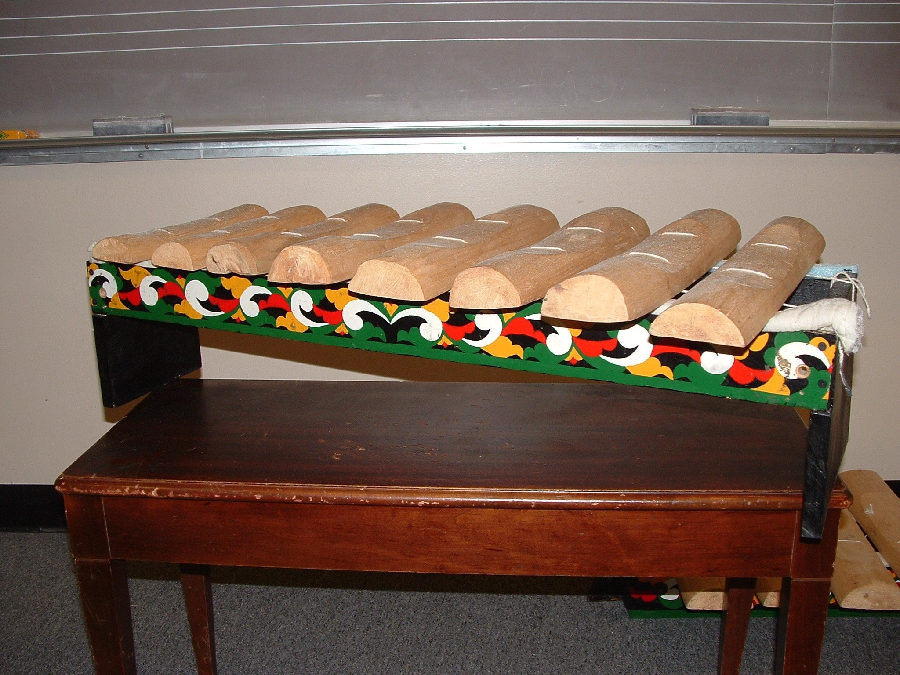

The Xylophone Goes Ting-Ting-Ting
Tap, listen, play!
Tap, listen, play!
This is a xylophone. It is a music maker. Ting ting ting!
Tap the bars with mallets. Tap tap. Ting ting.
Long bars. Short bars. Each bar has its own sound.
Tap a bar. It wiggles and wiggles. The sound goes to your ears.
Some sounds are high. Ting! Some sounds are low. Tong!

Tap one bar. Tap another bar. Now you made a little rhythm!

Xylophones can look different. But they all say, play with me! Ting ting ting!